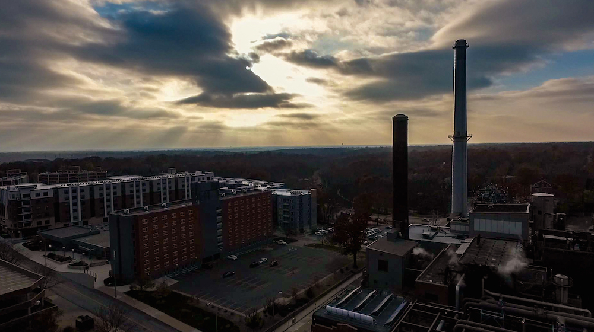

The compounds and chemicals within the following methods can be well identified by NovaTest™ P100. Knowing what problems you
have in your business, home, workplace or local environment can help you gather support for addressing those
issues.
TCE, or trichloroethylene, is a popular solvent with a sweet smell. It is a
nonflammable liquid used widely in the extraction of vegetable oil and caffeine, anesthesiology, dry cleaning,
metal degreasing, and many other applications. However, TCE has been classified as a carcinogen by the US
Environmental Protection Agency (EPA). It can cause problems within the central nervous system and can be
quite harmful if present in the water or air.
PCE (perchloroethylene or tetrachloroethylene) is commonly used in dry cleaning applications. It is a colorless
and nonflammable liquid with a strong sweet smell. It was also classified as a carcinogen, similar to TCE, for
its potential to cause problems within the central nervous system and ability to cause cancer. What’s more, it
contaminates soil easily, is hard to remove from water, and can be regarded as a toxic chemical to humans.

Some people may notice an unpleasant smell in their car, especially new cars. This
attributes to the VOCs released from decorations, paint, and adhesives present in the
interior of the vehicle. If exposed to strong sunlight and high temperatures, the organic
materials inside the car can decompose and release VOCs. Meanwhile, VOCs brought in from the
outside can be trapped in the air conditioning system and diffuse into the vehicle’s
interior.
Most of the following VOCs can cause cancer, or increase the risk of developing cancer long term.
People briefly exposed may experience headaches, nausea, dizziness, difficulty
concentrating, and can thus increase the risk of an accident.
Similar to those VOCs found in the air, the pollutants from pollution can come from almost
anywhere, but more specifically can result from industry discharges, combustions and sewage,
sites of manufacturing accidents, household sewage, agricultural waste and so forth. The
pollutants from such sources are usually of high concentration, meaning humans are more
susceptible to disease. These types of VOCs are very difficult to diffuse quickly, and are
some of the most dangerous.
These pollutants are usually acetone, anisole, benzaldehyde, benzene, butyl acetate,
cyclopentanone, ethylbenzene, heptane, isopropanol, xylene, styrene, toluene, etc.
Like many other VOCs previously listed, these chemicals are carcinogenic, and have a
tendency to damage the central nervous system.
While water is a crucial building block to support life, VOC
pollution of water can consequently affect the entire ecosphere. The sheer mobility of water
makes it extremely dangerous to contaminate, as pollutants can easily be carried through
the aquatic system, and cause global pollution. Some of the pollutants can be degraded by
microorganisms, limiting the damage they can cause, while others simply cannot. This is why
water is a medium that must constantly be tested to remove harmful VOCs from contaminating
the environment at an abnormally quick rate.
Common contaminants are 1,2-dichlorobenzene, 1,4-dichlorobenzene, benzene, chlorobenzene,
dichloromethane, ethylbenzene, isopropylbenzene, xylene, styrene, toluene, trichloroethylene,
etc. Benzene and its derivatives, as well as some halogenated hydrocarbons, are well known
toxins and carcinogens. Living creatures in direct contact with such pollutions are extremely
vulnerable to a myriad of health problems.
Copyright © 2017 Nanova Environmental Inc.
Back to the top